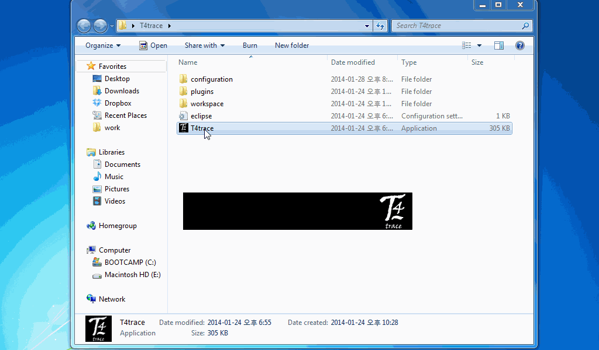

T4trace is based on JRE7, Equinox framework. To shorten, The application is available on most modern desktop systems, including Windows, Mac OS X and Linux - if it supports Java 1.7+. It had been tested under Windows 7 SP1 (64bit), OS X Mavericks, Ubuntu 12 LTS. Now Windows/Mac version is available to download.
When you download the proper .zip archive file, unzip it. You may find executable icon on the folder where you extracted. run the application.
OK, now let's dig deeper. (Click the image below will start animation)

First, set workspace. workspace means, literally, a "space" where you
"working". Best recommend is, if you have complex folder structure over images, select the root.
Workspace will be preserved over sessions.
Next, T4trace has 2 different modes:Single and Multi. Single, as it seems, is for analyzing single input image. With same manner, Multi is to analyze multiple images, under the folder.
As you might expected, yes, if you double-click an image item on the workspace-pane, it will trigger single-mode. Likewise, if you double-click an folder itme, multi-mode will be open.
On single mode, you can see the result instantly. checkboxes on the right-hand-side are layer selector. You can set layer visibility to test analysis worked properly.
Also, You can change initial-sampling grid size or color settings, on the menu T4trace > Preference window. The changes will be updated when you "refresh" the single analysis.
Finally, there are tabs on the bottom of the window. "Models" shows model(A reconstruct, categorized by Soma:the root node) information. "Nodes" table shows each node information. These tables also available to save into text file. Try right-click on the table.
Now, multi mode. you can source images from right-hand side checkbox list. Give a try regular expression on interective-filter on top of the list, you may find it handy! But beware, checks unseen woudn't be preserved.
So, if you set sources, check color filter and initial grid size. On single mode, initial grid size follows preference setting. However, on multi mode, you can change grid size for each tries. Select "START" button to proceed.
Done? Check data. those tables also, can be saved to files. Or, if you selected file-save checkbox, You may find more!
!Caution: T4trace can takes 8-bit, TIF format images. Monochrome recommended, but you can select color filter on multiple analysis mode.